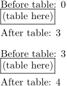

Contents
Summary
The command
\iftrialtypesetting
is a test for non-final typesetting passes
Settings
Description
ConTeXt sets the
\iftrialtypesetting
to true when it knows that the current typesetting event (box packaging) is not the final result that will be sent to the output file, but instead is some internal action that is only executed in support of another task like measuring typeset text widths.
Using \iftrialtypesetting as a test for non-final typesetting passes is especially useful inside TABLEs. If a counter is incremented inside of a TABLE cell, it may be incremented multiple times accidentally while TABLE tries to figure out the required column widths.
There are other situations where a conditional of the form \iftrialtypesetting\else ... \fi is useful, but making sure counters are not incremented too often is a typical application.
Examples
Simple example
-
\definecounter[EventCount] Before table: \rawcountervalue[EventCount] \startTABLE[|p|] \NC (table here)\incrementcounter[EventCount]\NC\NR \stopTABLE After table: \rawcountervalue[EventCount] \blank Before table: \rawcountervalue[EventCount]\\ \startTABLE[|p|] \NC (table here)\iftrialtypesetting\else\incrementcounter[EventCount]\fi \NC\NR \stopTABLE After table: \rawcountervalue[EventCount]
- 